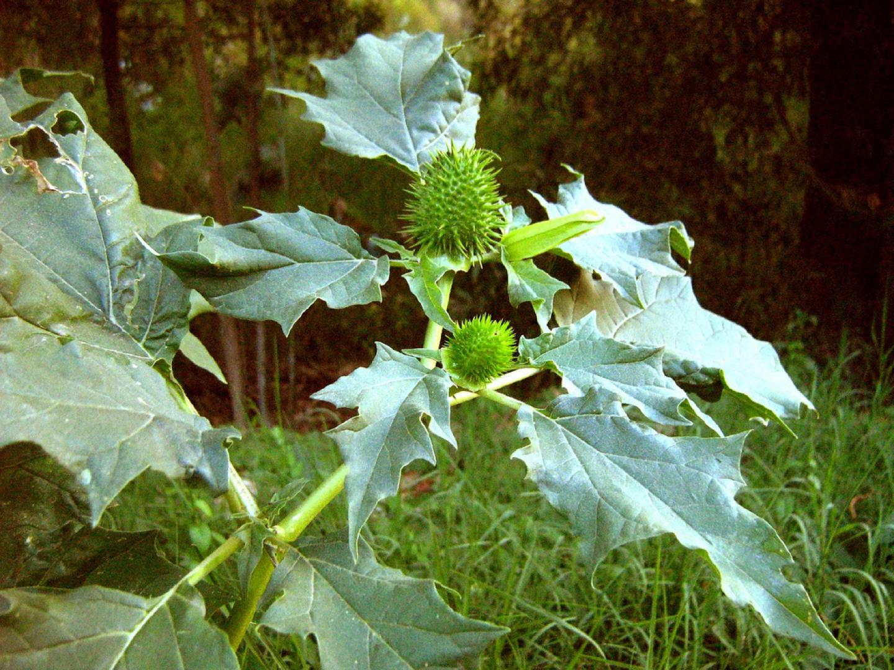

Ayuntamiento de Senés
JARDIN BOTANICO DE ESPECIES AUTOCTONAS DE SENES

Datura stramonium

El estramonio (Datura stramonium) es una planta herbácea anual muy característica de terrenos alterados y ricos en nutrientes del ámbito mediterráneo. Se reconoce fácilmente por su porte robusto y por sus llamativas flores en forma de trompeta.
Presenta tallos erectos y ramificados, con hojas grandes, irregulares y de borde dentado, de color verde oscuro. Sus flores son grandes, de color blanco o violáceo, y se abren generalmente al atardecer. Tras la floración, produce frutos espinosos que contienen numerosas semillas.
El estramonio se distribuye ampliamente por regiones templadas y cálidas del mundo, creciendo de forma espontánea en terrenos removidos, bordes de caminos, escombreras y cultivos abandonados. Prefiere suelos ricos en materia orgánica.
En el entorno de Senés, aparece en zonas alteradas y cercanas a actividades humanas, formando parte de la vegetación ruderal.
El estramonio contiene potentes alcaloides con efectos sobre el sistema nervioso, lo que le confiere propiedades medicinales pero también una alta toxicidad. Tradicionalmente se ha utilizado con fines terapéuticos en dosis controladas, especialmente como broncodilatador.
Su uso requiere extrema precaución, ya que todas las partes de la planta son tóxicas y pueden provocar efectos graves si se ingieren.
El estramonio simboliza el peligro y el misterio, debido a sus propiedades tóxicas y a su historia ligada a usos rituales y medicinales. Representa el lado oculto y potente de la naturaleza.
También se asocia con el conocimiento tradicional sobre plantas peligrosas.
En Senés, el estramonio era conocido por su toxicidad y se trataba con cautela. se conocía con el nombre de "mata topera", ya que los agricultores la sembraban en los huertos para eliminar a los topos, los cuales morían al morder su raiz.
Se utilizaba en otros tiempos para el dolor de muelas, incluso decían que fumaban sus hojas mezcladas con otras como tranquilizante.
El estramonio florece principalmente en verano, produciendo grandes flores que se abren al atardecer y permanecen visibles durante la noche.
Sus flores nocturnas están adaptadas para atraer polinizadores específicos. Además, sus frutos espinosos son una de sus características más distintivas.
A lo largo de la historia, ha sido utilizado tanto en medicina como en rituales, siempre bajo un profundo conocimiento de sus efectos.